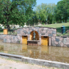

Top three activities to do at Torshov

Attend a show or a concert
The Torshov Theatre is a great place to spend your night out.

Go for a picnic in the local park
The Torshov Park is perfect for picnic, getting some tan, or just chilling out.

Play sports at the Lilleborg field
Play volleyball, football, basket ball or lift some weights.